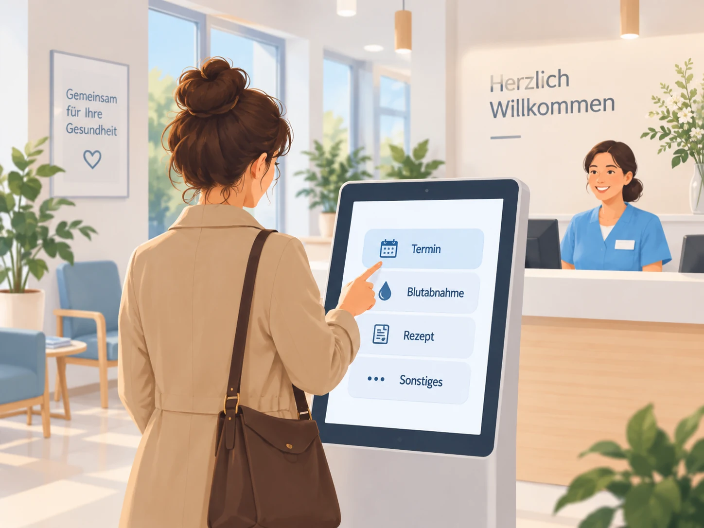
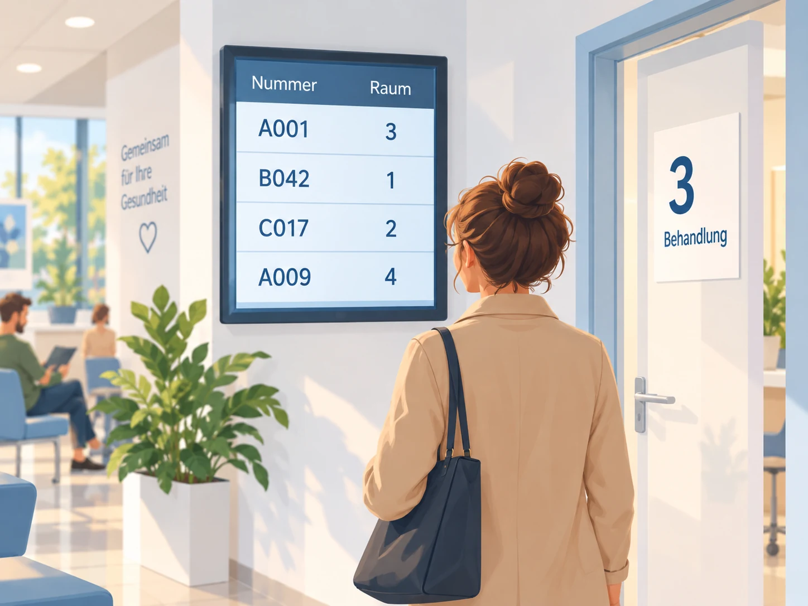

Jeder Wunsch ist ein eigener Einstieg. Sie wählen die Unterstützung, die Ihnen im
Alltag hilft.
01
Weniger Andrang am Empfang.
Anmeldung, Unterlagen und Rückfragen kommen gleichzeitig am Tresen an.
Patienten können sich selbst anmelden und Unterlagen schon während der Wartezeit
erledigen. Ihr Team hilft dort, wo persönliche Unterstützung gebraucht wird.
Ein möglicher Praxisbesuch. Welche Schritte Sie digital unterstützen, entscheiden Sie.
01Im Praxisbesuch
In Ruhe ankommen.

Am Empfang anmelden oder das Terminal nutzen. Das Anliegen gibt bereits eine erste
Orientierung für den weiteren Weg.
Patienten
Wissen, wie es nach der Anmeldung weitergeht.
Ihr Team
Sieht den Besuch und unterstützt bei Bedarf persönlich.
02Im Praxisbesuch
Die Wartezeit nutzen.
Platz nehmen und bei Bedarf Unterlagen hochladen oder den Erstanamnesebogen
ausfüllen.
Patienten
Können Unterlagen am eigenen Handy übergeben.
Ihr Team
Sieht eingegangene Dokumente beim zugehörigen Besuch.
↗Optionaler Abzweig
Bei Bedarf kurz raus.
Nach Absprache die Praxis verlassen. Die MFA erfasst die Abwesenheit und
organisiert die Rückkehr.
Patienten
Können die Wartezeit auch außerhalb der Praxis verbringen.
Ihr Team
Behält Abwesenheiten im Blick. Rückholen und Aufruf zum Raum bleiben getrennte
Schritte.
03Im Praxisbesuch
Wissen, wohin es geht.

Hinterlegte Wege unterstützen die Zuordnung. Das Team wählt das konkrete Ziel und
kann auf die aktuelle Situation reagieren.
Patienten
Sehen beim Aufruf ihre Nummer und den Zielraum.
Ihr Team
Steuert den Aufruf; optionale Tür-Panels geben zusätzliche Orientierung.
04Im Praxisbesuch
Gut durch den Besuch.
Ankunft bestätigen, Behandlung begleiten und den Besuch abschließen. Bei Bedarf
folgen weitere Stationen oder eine erneute Wartephase.
Patienten
Erfahren, ob es weitergeht und wohin.
Ihr Team
Bedient den Ablauf am Arbeitsplatz oder an einem passend eingerichteten Panel
im Raum.
Fachlicher Hintergrund
An bekannten Belastungen ansetzen.
Fachliche Empfehlungen und Erfahrungen aus Praxen geben Orientierung für die
Gestaltung.
01 · BGW · Stand Oktober 2025
Wenn viele Aufgaben zusammenkommen.
Die Berufsgenossenschaft für Gesundheitsdienst und Wohlfahrtspflege beschreibt die
gleichzeitigen Anforderungen am Empfang sowie Unterbrechungen und unzureichende
Abstimmung als mögliche Belastungen.
Das PraxisBarometer mit rund 1.700 befragten Praxen zeigt steigende Zufriedenheit
mit etablierten digitalen Anwendungen. Zugleich bleiben technische Störungen und
Unterschiede in der Nutzbarkeit relevant.
Empirische Befragung durch IGES im Auftrag der KBV.
Die Quellen beschreiben Belastungen und Digitalisierungserfahrungen im Praxisalltag. Sie
untersuchen nicht die Wirksamkeit von Wartezimmer.
Aus Überzeugung offen
Offen. Unabhängig. Für Ihre Praxis.
Ihre Praxis soll den Alltag gestalten können – auch bei der Software. Wartezimmer
läuft lokal und ist Open Source. Sie entscheiden, wer es betreibt und an Ihre
Abläufe anpasst.
Der gesamte Funktionsumfang ist als Open Source verfügbar.
Lizenzkostenfrei und lokal in Ihrer Praxis betreibbar.
Selbst betreiben, anpassen oder die eigene Praxis-IT beauftragen.
Von der Software zum Praxisalltag
Freie Software. Hilfe nach Bedarf.
Wir unterstützen Sie bei Einrichtung, Einweisung und Wartung. Gemeinsam mit Ihrem Team
und Ihrer Praxis-IT machen wir aus der Software Ihren Praxisablauf.
01 / EINFÜHRUNG
Gut starten.
Installation, Einrichtung und Einweisung. Gemeinsam mit Ihrem Team und Ihrer
Praxis-IT.
Was dazugehört
Räume und Anliegen abstimmen, Geräte einrichten und den Ablauf gemeinsam testen.
02 / ANPASSUNG
Zu Ihnen passen.
Individuelle Anpassungen für Ihre Abläufe. Mit vorab vereinbartem Umfang.
Was möglich ist
Texte, Formulare oder zusätzliche Abläufe. Schnittstellen nach Prüfung des
Zielsystems.
03 / BETREUUNG
Begleitet bleiben.
Updates, Wartung und Pflege Ihrer Anpassungen. Optional, mit klar vereinbartem
Leistungsumfang.
Wie wir begleiten
Unterstützung für Ihr Team und Ihre Praxis-IT bei Fragen und Veränderungen im
laufenden Betrieb.
Passt auch technisch
Auf dem Rechner, den Sie schon haben.
Wartezimmer ist für den Betrieb auf einem vorhandenen Praxisrechner ausgelegt. We
love Mac – und unterstützen Windows ebenso. Ihr Team nutzt die Software im Browser
im Praxisnetz.
Sie können mit einzelnen Funktionen beginnen. Ihre MFA kann beispielsweise
Abwesenheiten und Rückholen auch ohne Terminal organisieren. Das Patientenportal und
Raum-Panels ergänzen Sie dort, wo sie zu Ihren Abläufen passen.
Wie arbeitet Wartezimmer mit unserem PVS zusammen?
Ihr PVS bleibt der Ort für Patientenverwaltung und Dokumentation. Wartezimmer
organisiert Anmeldung und Aufruf. Patientendaten lassen sich per CSV importieren,
Unterlagen per Dateiexport übergeben. Weitere Schnittstellen stimmen wir nach
Prüfung Ihres Systems ab.
Wie melden sich Patienten an?
Patienten melden sich bei Ihrer MFA oder selbst am Terminal an und erhalten eine
Wartenummer. Für Unterlagen und Erstanamnese können Sie zusätzlich das
Patientenportal im Browser anbieten.
Wer entscheidet über die Reihenfolge?
Ihr Praxisteam entscheidet über den Aufruf und berücksichtigt dabei Anliegen und
medizinische Prioritäten. Die Wartenummer ordnet den Aufruf dem Besuch zu; die
Anzeige nennt den nächsten Raum.
Wer kann die Software betreiben und betreuen?
Sie können Wartezimmer selbst betreiben, Ihre Praxis-IT einbinden oder einen
Dienstleister wählen. Wir bieten Einrichtung, Wartung und individuelle Anpassungen
mit vereinbartem Leistungsumfang an.
Kontakt
Sprechen wir über Ihre Praxis.
Sie haben Fragen zu Wartezimmer oder wünschen Unterstützung bei Einrichtung, Anpassung
und Betrieb? Schreiben Sie uns oder rufen Sie an.